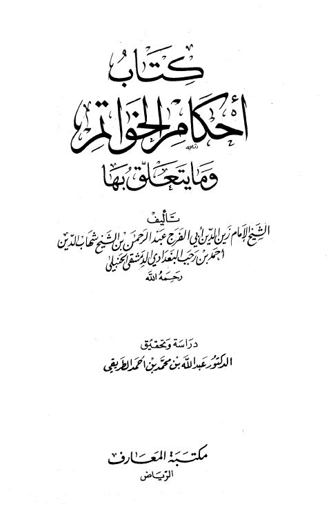

كتاب أحكام الخواتيم وما يتعلق بها- المعارف
Authors: ابن رجب الحنبلي
Editors: عبد الله بن محمد الطريقي
Publishers: مكتبة المعارف
Download Downloads need an internet connection.
- Published
- 1412هـ 1991م
- Country
- الرياض، السعودية
- Edition
- 1
- Volumes
- 1
- Pages
- 176
- Type
- كتاب
- Category
- الحديث وعلومه
- Subcategory
- باقي مجموعات الحديث
Description
**▫️ العنوان: كتاب أحكام الخواتيم وما يتعلق بها- المعارف** ▪️ المؤلف: #عبد_الرحمن_البغدادي_بن_رجب_الحنبلي ▫️ المحقق: #عبد_الله_بن_محمد_الطريقي ▪️ الناشر: #مكتبة_المعارف ▫️ تاريخ النشر: 1412هـ 1991م ▪️ بلد النشر: الرياض، #السعودية ▫️ الطبعة: 1 ▪️ عدد الأجزاء: 1 ▫️ الصفحات: 176 ▪️ نوع الوعاء: #كتاب ▫️ التصنيف الرئيسي: #الحديث_وعلومه ▪️ التصنيف الفرعي: #باقي_مجموعات_الحديث ۪